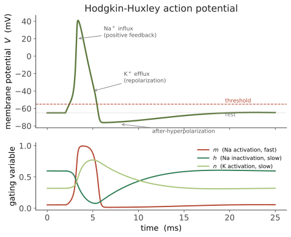

本页目录
脑 I · 神经元的定量物理
证据地位：【实】——Hodgkin–Huxley 模型是生物学中最成功的定量理论之一（1963 年诺奖），其预测精度可与物理学模型相比。 神经科学的地基是一个可以完全写下来、并数值求解的电学系统。本页从膜电位建起，到动作电位的完整方程。这是全课定量的第二个高峰——如果你熟悉微分方程与电路，会发现神经元本质上是一个带非线性电导的 RC 电路（🔗 物理站电磁学、数学站 ODE）。
一、静息电位：从浓度梯度到电压
线一说过，细胞维持跨膜离子梯度（Na⁺/K⁺ 泵每消耗一个 ATP，泵出 3 个 Na⁺、泵入 2 个 K⁺）。典型哺乳动物神经元：
| 离子 | 胞内 (mM) | 胞外 (mM) | 平衡电位 \(E\) |
|---|---|---|---|
| K⁺ | ~140 | ~5 | −90 mV |
| Na⁺ | ~15 | ~145 | +60 mV |
| Cl⁻ | ~10 | ~110 | −65 mV |
平衡电位由 Nernst 方程给出——它是浓度梯度与电场达到平衡时的电压：
真实静息电位（约 −70 mV）由多种离子按各自电导加权决定（Goldman 方程）。静息时膜对 K⁺ 通透性最高，故静息电位接近 \(E_K\) 但未达到——这个"接近但不等于"的偏差，正是 Na⁺ 泄漏电流造成的。
能量代价：维持这些梯度消耗大量 ATP——脑约占静息代谢的 20%（线二第二页），其中大部分用于离子泵。思考在字面意义上是昂贵的。
二、Hodgkin–Huxley：把神经元写成方程
Hodgkin 与 Huxley 用枪乌贼巨轴突（直径达 1 mm，可插入电极）做电压钳实验，测出电导随电压和时间的变化，并写出方程组。
基本电路方程（膜是电容，通道是可变电导）：
其中 \(m, h, n\) 是门控变量（取值 0–1），各自服从一阶动力学：
三个门控变量的分工（理解动作电位的钥匙）：
- \(m\)：Na⁺ 激活门，随去极化快速打开；
- \(h\)：Na⁺ 失活门，随去极化缓慢关闭；
- \(n\)：K⁺ 激活门，随去极化缓慢打开。
三、动作电位：一次正反馈的爆发与刹车

过程分解：
- 阈下：小的去极化被漏电流拉回，无事发生；
- 阈值（约 −55 mV）：\(m\) 门打开足够多，Na⁺ 内流引起的去极化超过 K⁺ 外流的抑制——正反馈启动；
- 上升相：Na⁺ 大量内流，电压冲向 \(E_{Na}\)；
- 下降相：\(h\) 关闭（Na⁺ 通道失活）+ \(n\) 打开（K⁺ 外流）→ 复极化；
- 后超极化：K⁺ 通道尚未关闭，电压短暂低于静息；
- 不应期：\(h\) 需要时间恢复——绝对不应期期间无法再激发。
三个重要后果：
- 全或无：一旦过阈，波形基本固定——信息编码在发放的时间与频率里，不在幅度里；
- 单向传播：不应期使动作电位不能倒退；
- 频率上限：不应期决定了最高发放率（约几百 Hz）。
数学视角：HH 是一个四维非线性动力系统。阈值现象对应相空间中的分离线，重复发放对应极限环，阈值附近的行为可用分岔理论分析——降维后的 FitzHugh–Nagumo 模型（二维）保留了主要定性行为，是研究可激发系统的经典范例（🔗 数学站动力系统）。
四、传导：电缆理论
动作电位如何沿轴突传播？把轴突看成一根有漏电的电缆：
\(\lambda\) 是电压衰减到 \(1/e\) 的距离。要传得远，需膜电阻 \(r_m\) 大（少漏电）、轴向电阻 \(r_i\) 小（粗轴突）。
两种提速策略：
- 加粗轴突：\(r_i \propto 1/d^2\)，故传导速度 \(\propto \sqrt{d}\)。枪乌贼的巨轴突走这条路——代价是体积昂贵，无法大规模使用。
- 髓鞘化（脊椎动物的方案）：胶质细胞（少突胶质细胞/施万细胞）包裹轴突，大幅提高 \(r_m\)、降低膜电容；动作电位只在朗飞结处再生，形成跳跃式传导。速度 \(\propto d\)（线性而非平方根），可达 120 m/s，且又快又省空间省能量。
多发性硬化正是髓鞘被免疫系统破坏（自身免疫，线二第四页），导致传导减慢或阻滞——结构与功能的对应在此非常直接。
五、树突：不只是被动的天线
经典图景把树突当被动电缆，把计算交给胞体。这个图景已被修正：树突含有电压门控通道，能产生局部树突尖峰；不同树突分支可作为半独立的计算单元，实现非线性整合（如同时到达同一分支的输入产生超线性响应）。
含义：单个神经元的计算能力远超"加权求和 + 阈值"的感知机模型。有研究用多层人工网络来拟合单个皮层锥体神经元的输入输出关系，需要相当深度才能拟合好——这提示生物神经元本身近似一个小型网络。这是神经科学与人工神经网络对话中的一个重要修正（🔗 AI 站）。
六、离子通道的多样性
人类基因组编码数百种离子通道，构成神经元多样性的基础：电压门控（Na⁺、K⁺、Ca²⁺ 各有多种亚型）、配体门控（下页突触受体）、漏通道与泵。
Ca²⁺ 通道特别重要，因为 Ca²⁺ 不只带电荷，还是第二信使——它触发突触囊泡释放（下页）、激活激酶、调节基因表达。电信号通过 Ca²⁺ 转成化学信号，这是神经元把"活动"转成"改变"（可塑性）的关键接口。
通道病（channelopathy）：通道基因突变导致癫痫、周期性瘫痪、长 QT 综合征、某些疼痛综合征（SCN9A 功能缺失导致先天性无痛症）——这些疾病提供了通道功能的"自然实验"。
下一页：脑 II——突触。神经元之间如何通信，以及连接强度如何被经验改变。这是学习与记忆的分子基础。